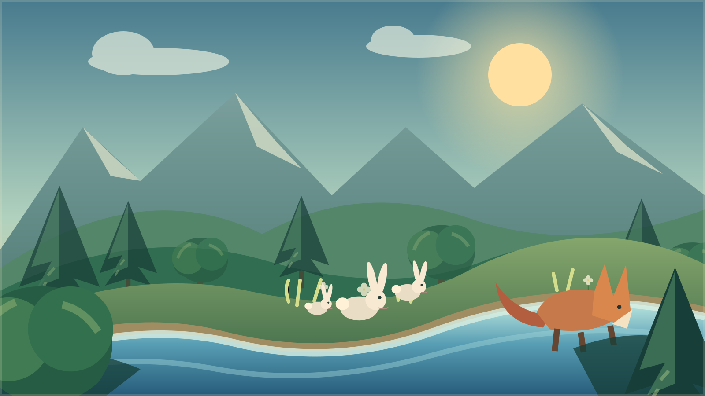

Вход за записване на напредъка
Без вход можеш да играеш, но играта няма да се запише.

Животът в долината
е в твоите ръце.
Вода. Трева. Зайци. Лисици. Един жив свят, който се променя с всеки твой ход.
10 ХОДА · 4 РЕСУРСА · 1 ДОЛИНА
Как работи долината?
Избери действие, предвиди четирите промени и изиграй хода. После виж причините в дневника. Моделът е опростен учебен пример, а не научна прогноза.
ПЪТЕКАТА НА ПАЗИТЕЛЯ
Избери мисия
Пет изпитания за една жива долина.
Как се играе? Кратки правила
- На всеки ход избираш едно действие: трева, водоем, зайци, лисици или без намеса.
- Преди хода предвиждаш дали водата и популациите ще се увеличат, запазят или намалеят.
- След хода сравняваш прогнозата с резултата в „Дневника на причините“.
Това е опростен учебен модел, а не научна прогноза за истинска екосистема.
Маршрут през долината
01 / 05Трудност: 1 / 3
ТЕКУЩО ПРЕДИЗВИКАТЕЛСТВО
Първи живот
Мисия 1: Първи живот
Цел: и трите вида да оцелеят 10 хода.
Вода–0
Трева–0
Зайци–0
Лисици–0
Живата долина
Без събитиеВода 60 · Трева 200 · Зайци 20 · Лисици 4ДОЛИНА 01 / НАБЛЮДЕНИЕ
ПОСЛЕДИЦИ ОТ ХОДА
Долината се промени
Без вход — играта не се записва.
Край на мисията